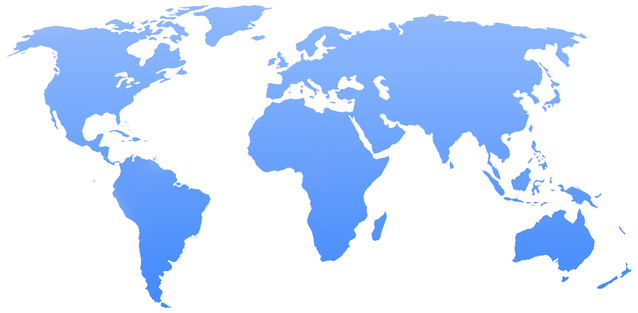

GEOG 771
Kate Walker
University of Auckland
Semester 2 | 2016

Home
Lab 2
Lab 3
Lab 4
Lab 5
This is a time series webmap showing the cyclist collisions in Seattle from 2006-2016, this map was
created on
carto.com